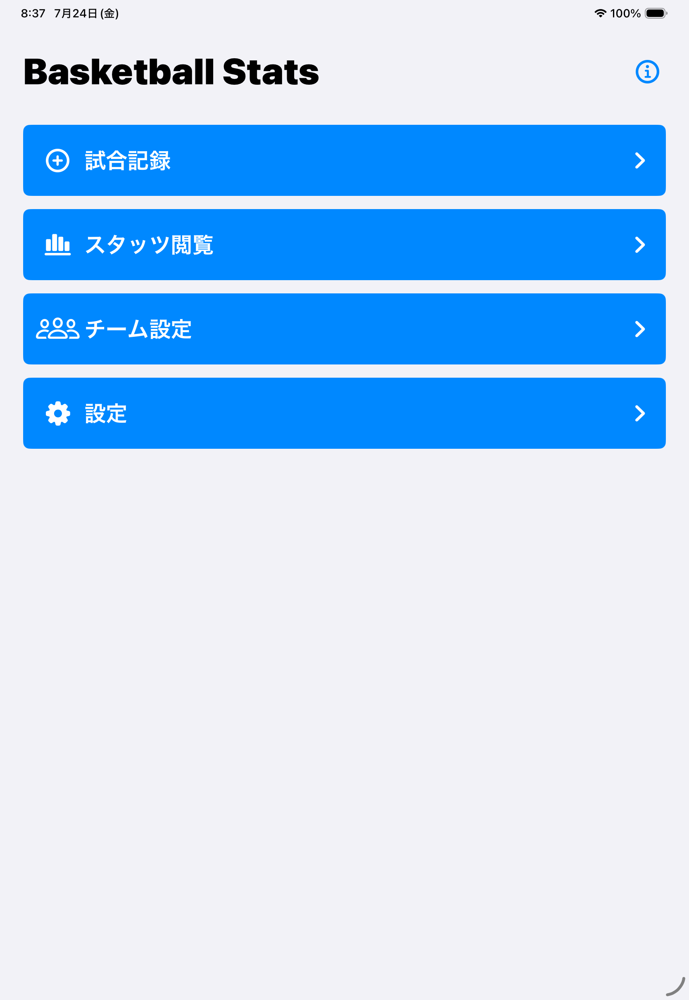
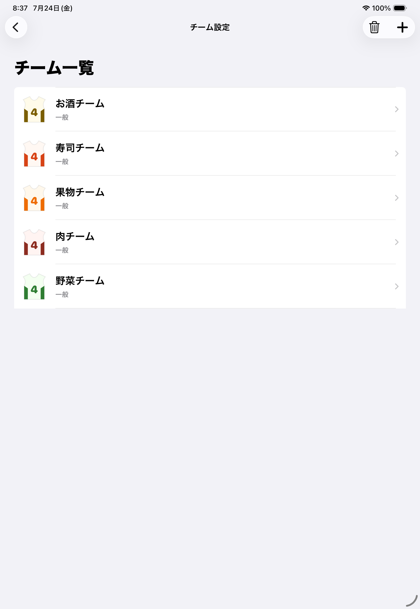
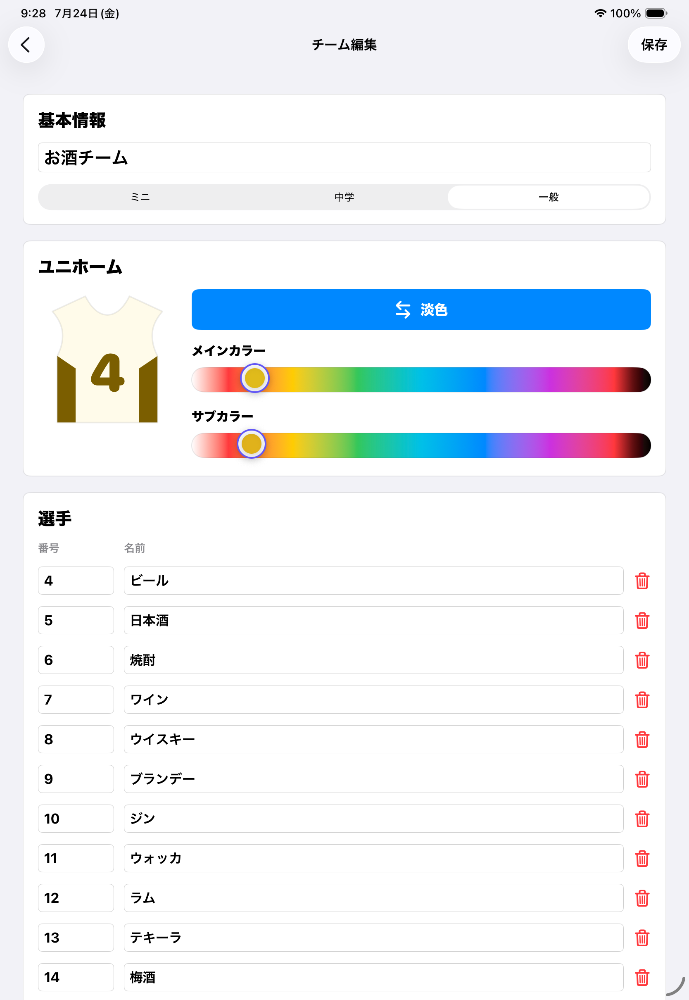
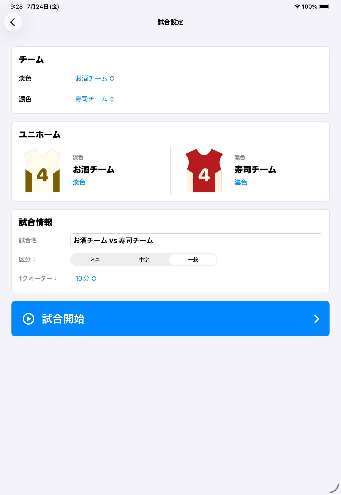
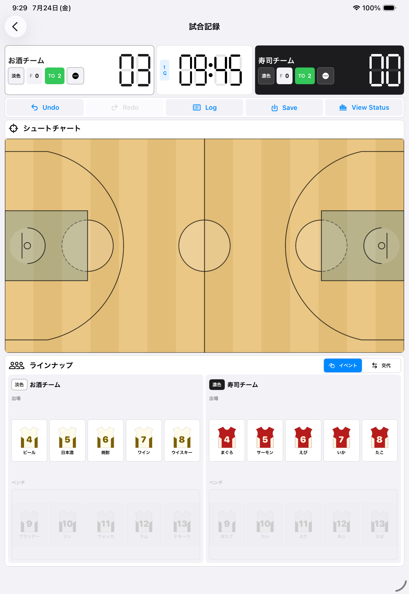
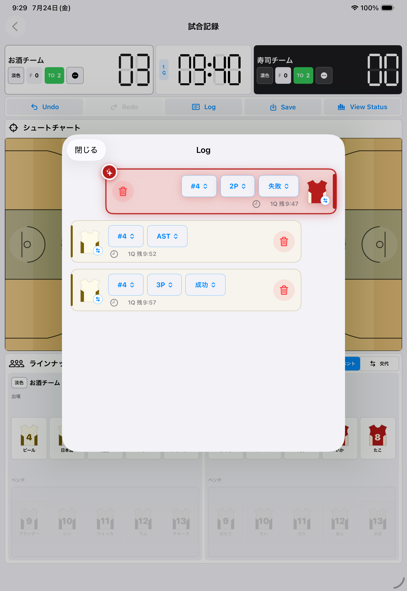
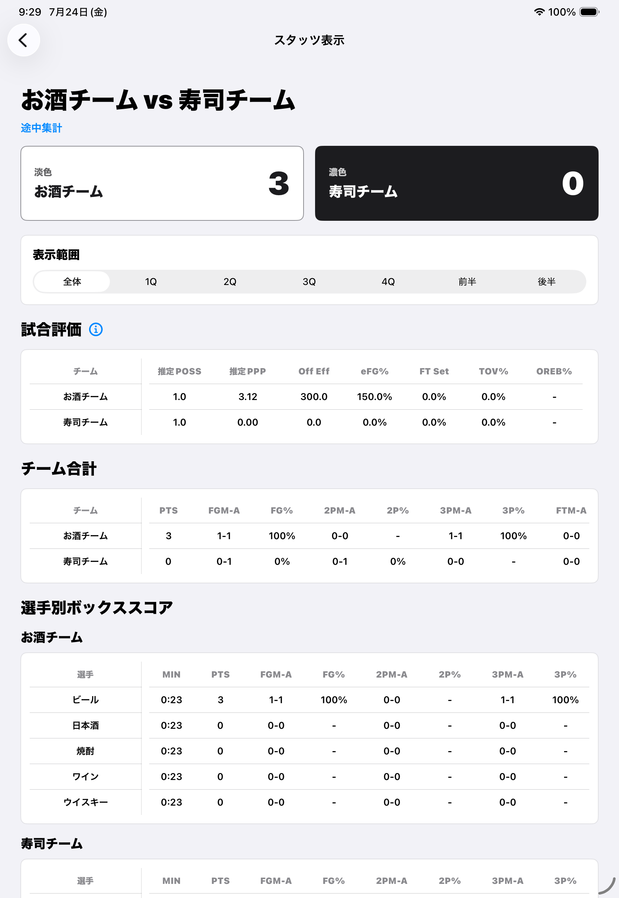
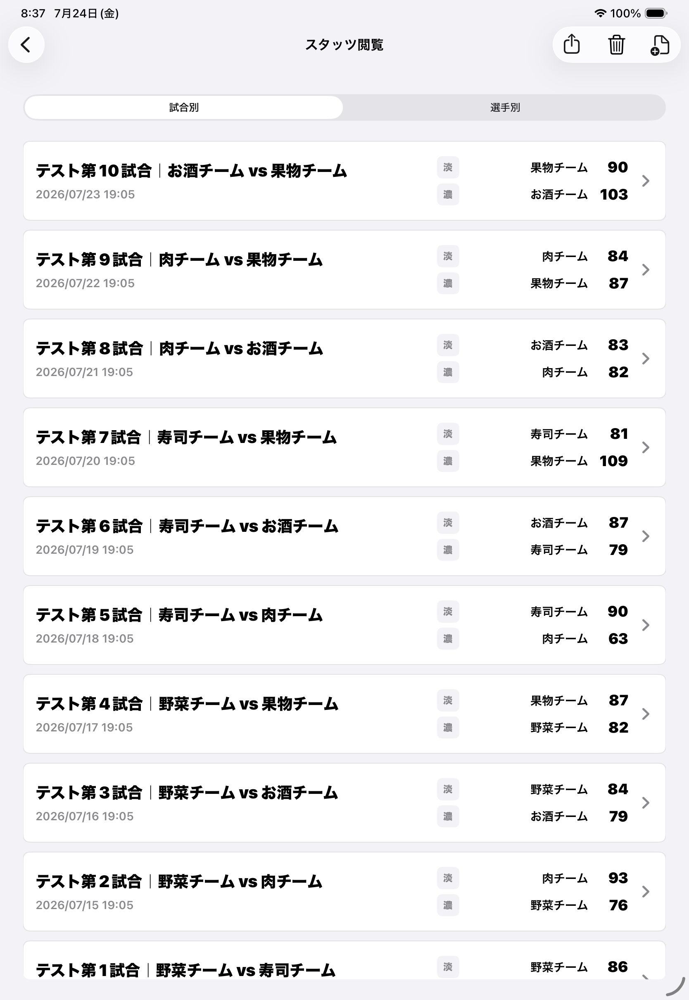
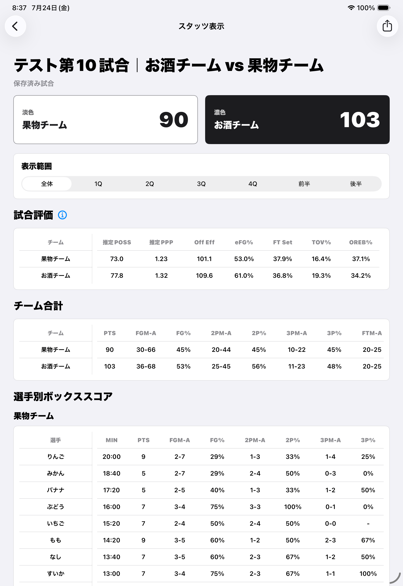

iPadで記録する
Writerの使い方
チームを登録し、試合をリアルタイムに記録して、保存・共有するまでの基本操作です。 WriterはiPadの縦画面で使用します。
チーム設定 → 試合記録 → スタッツ閲覧
実際のシミュレーターで、お酒チームと寿司チームの試合を操作しています。 3P成功、AST、2P失敗がスコアとLogへ反映され、View Statusで途中スタッツを確認するまでの流れです。
- 1チームのユニホームと選手を確認
- 2出場選手を決め、得点とイベントを入力
- 3Logを確認し、途中スタッツを表示
1. 最初の準備
Writerのホームには、試合記録、スタッツ閲覧、チーム設定、設定の4つの入口があります。 初めて使うときは「チーム設定」から始めます。
{kind=link}

2. チームと選手を登録する
- ホームで「チーム設定」を選びます。
- 右上の追加ボタンからチームを作成します。
- チーム名、カテゴリ、淡色・濃色ユニホームを設定します。
- 背番号と選手名を登録して保存します。
背番号は0〜99と00に対応しています。同じチーム内で同じ背番号は登録できません。 選手名は任意ですが、試合後に見分けやすい名前を付けることをおすすめします。
{kind=link}

{kind=link}

3. 試合を設定する
- ホームで「試合記録」を選びます。
- 異なる2チームを淡色側と濃色側へ割り当てます。
- 試合名、カテゴリ、1クオーターの時間を確認します。
- 「試合開始」を選びます。
標準時間はミニ6分、中学8分、一般10分です。試合名はチーム名から自動入力されますが、 必要に応じて変更できます。
{kind=link}

4. 試合をライブ記録する
ライブ画面には、スコア、タイマー、シュートチャート、ラインナップ、Log、保存操作が 一画面にまとまっています。
{kind=link}

最初に出場選手を選ぶ
ベンチ欄から選手を選び、交代リザーブへ追加して確定します。 両チームに少なくとも1人ずつ出場選手がいないと、タイマーとイベント入力は開始できません。
シュートを入力する
- コート上のシュート位置をタップします。
- 表示された選手の背番号を、成功なら上、失敗なら下へスワイプします。
- 位置から2P／3Pが自動判定され、スコアとLogへ反映されます。
FTは左右どちらかのフリースローサークルを約0.4秒長押しして入力します。 選手を特定できない場合は「？」を選ぶと、 チーム得点として記録し、後からLogで選手を割り当てられます。
その他のイベントを入力する
出場選手をスワイプすると、設定したイベント候補が表示されます。 OFR、DFR、AST、ST、BLK、TO、FOULなどから選びます。
{kind=link}

5. 入力を修正する
直前の入力を戻す
誤入力に気づいた直後は「Undo」を使います。戻した入力は「Redo」でやり直せます。 主に追加したスタッツイベントが対象です。
過去の入力を直す
「Log」を開くと、最新の入力から順に確認できます。シュートの選手、成功・失敗、 イベント種類など、編集可能な項目を行内で修正できます。
6. 保存してスタッツを見る
- 必要なら「View Status」で途中集計を確認します。
- 試合終了後に「Save」を選びます。
- 確認画面で「保存して終了」を選びます。
- ホームの「スタッツ閲覧」から保存済み試合を開きます。
Saveで確定した試合をライブ記録へ戻して編集することはできません。保存前にLogとスコアをご確認ください。
{kind=link}

{kind=link}

{kind=link}

試合評価とシュート傾向
表示範囲は全体、各クオーター、前半、後半へ切り替えられます。 「試合評価」では、推定POSS・推定PPP・Off Eff・eFG%など7つの試合評価指数をチーム単位で比較できます。 シュートチャートでは成功・失敗の位置、ゾーン別成功率、試投密度・成功密度を確認できます。
「選手別」では複数試合を横断した平均、試合別成績、3つのエリアごとのシュート期待値、 ゾーン・密度を確認できます。別端末や背番号変更などで同じ選手が別々に表示された場合は、 原本を変えずにデータ統合できます。